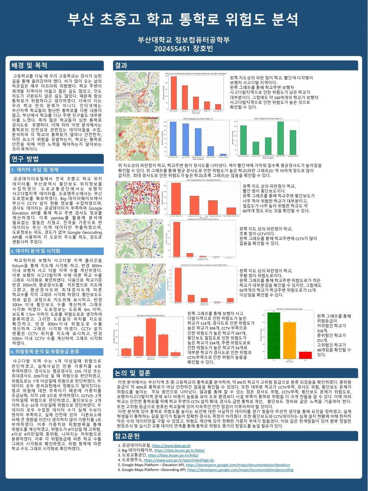

2025.1 · INTRODUCTION TO DATA SCIENCE
부산 통학로
위험도 분석
공공데이터와 공간 분석을 활용해 부산 초·중·고등학교 주변의 통학 위험을 평가한 개인 프로젝트입니다.
- Scope
- 부산 617개 학교
- Method
- 공간 분석 · 위험도 가중치
- Output
- 지도 · 그래프 · 위험등급

01
프로젝트 설명
가파르고 미끄러운 경사로, 어둡고 좁은 길, 보도와 차도가 분리되지 않은 도로를 경험하며 분석을 시작했습니다. 학교 주변의 보행자 사고·경사도·횡단보도·CCTV·위험도로를 수집해 어떤 요소가 통학 안전을 떨어뜨리는지 살펴봤습니다.
공공데이터포털·부산시 데이터·도로교통공단·도로명주소 자료에 Google Elevation 및 Geocoding API를 결합했습니다. 학교 반경 300~800m의 시설과 위험요인을 공간 분석하고, 요인별 기준과 가중치로 학교별 위험등급을 분류했습니다.
02
결과
전체 학교의 약 8%가 고위험으로 분류됐습니다. CCTV 부족, 급한 경사도와 횡단보도 환경이 통학로 위험을 높이는 주요 요인으로 나타났습니다. 일부 시설 데이터의 수가 실제보다 적고 가중치에 주관적 판단이 포함돼, 향후 현장 조사와 실시간 교통 데이터로 보완할 필요가 있습니다.
03
분석 포스터
데이터 수집 · 공간 시각화 · 위험등급